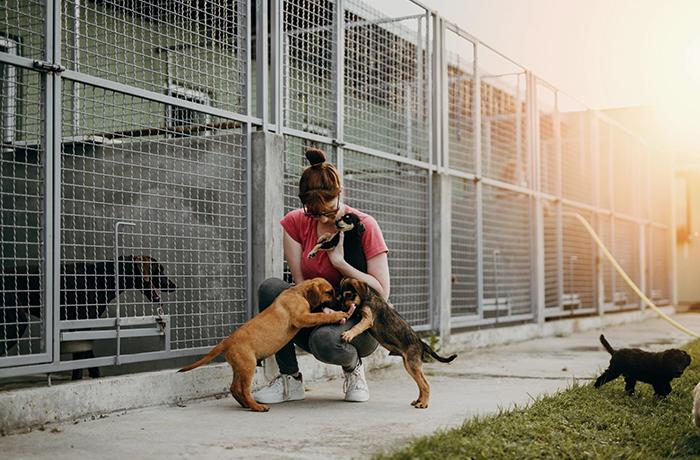
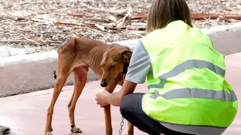
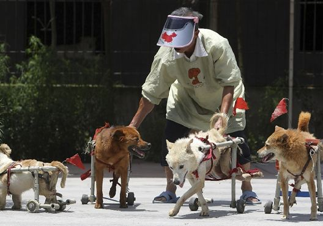

Bienvenidos a nuestra ONG, si tú eres un amante de los animales este es el lugar correcto



¿Quiénes somos?
Rodolfo al Rescate es una organización sin fines de lucro dedicada al rescate, cuidado y protección de animales en situación de abandono, maltrato o riesgo. Nuestro compromiso nace del amor por los animales y del deseo de brindarles una segunda oportunidad para vivir con dignidad y seguridad.
En nuestra ONG trabajamos día a día rescatando animales que se encuentran en la calle o en condiciones vulnerables. Una vez rescatados, les brindamos atención veterinaria, alimentación adecuada y un espacio seguro donde puedan recuperarse física y emocionalmente. También fomentamos la adopción responsable, buscando familias comprometidas que les ofrezcan un hogar definitivo lleno de cariño y cuidado.
Además, desarrollamos campañas de concientización dirigidas a la comunidad, promoviendo el respeto hacia los animales, la tenencia responsable y la importancia de la esterilización para evitar la sobrepoblación animal. Nuestro equipo está formado por voluntarios comprometidos que trabajan con dedicación y empatía, convencidos de que cada vida importa y que, con pequeñas acciones, es posible generar grandes cambios en la vida de los animales.
Nuestro impacto en números
| Programas | Voluntarios | Animales intervenidos |
|---|---|---|
| Un nuevo hogar | 100 | +500 |
| Rescate y recuperación | 250 | +1200 |
| Por un mundo mejor | 200 | +800 |
| total | 550 | +2500 |
Más de 2500 animales han sido rescatados y muchos más esperan por tu ayuda!
Que esperas para unirte a nosotros?Seguinos en nuestras redes sociales
En nuestras redes sociales compartimos historias de nuestros amigos rescatados, consejos para el cuidado de los animales, información sobre nuestros programas, campañas y formas de involucrarse como voluntario o donante. ¡Síguenos para estar al tanto de todas nuestras actividades y ser parte de esta gran comunidad que trabaja por el bienestar animal!